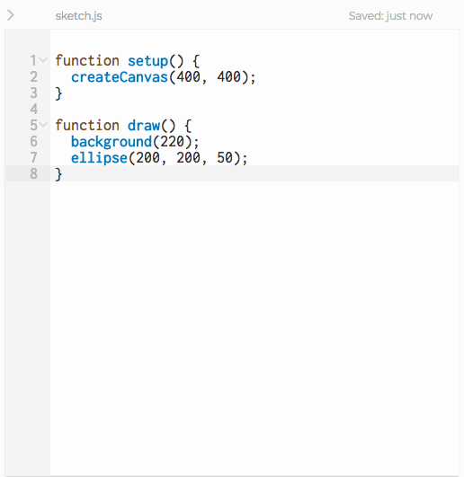
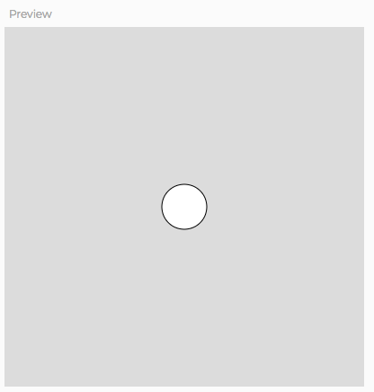
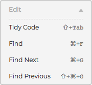
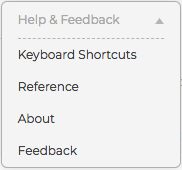
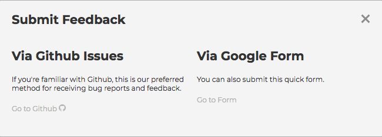
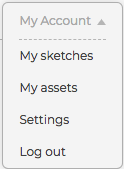
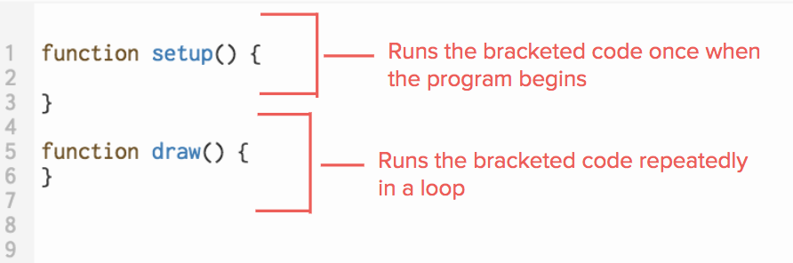
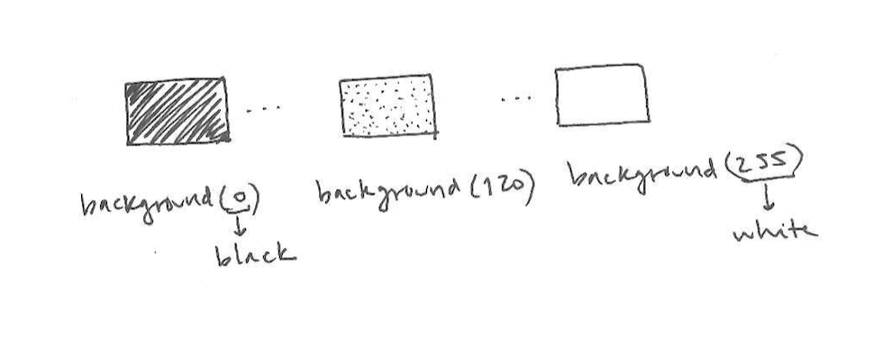

Overview
In this learning activity students will create a visual composition using the p5 shape-drawing functions (point, line). They will be introduced to functions parameters and then call them in p5.

Overview
In this learning activity students will create a visual composition using the p5 shape-drawing functions (point, line). They will be introduced to functions parameters and then call them in p5.
Suggested Duration
45 minutes
Objectives
Students will be able to:
Student Outcomes
Abstraction:
Algorithms:
Programming:
Vocabulary
| Functions | Functions are lines of code that perform specific tasks. |
|---|---|
| Parameters or arguments | Are the values inside of a parenthesis following the name of the function. These are used to change the outcome of a function |
| IDE | Integrated development area is a software application that provides a place for computer programmers to develop code. |
| Width | Horizontal distance of a 2D shape |
| Height | Vertical distance of a 2D shape |
| Vertex / Vertices | A point where two or more lines meet |
| Cartesian (Coordinate) Place | Four quadrant grid with an x & y axis, origin, etc. |
Resources
p5.js web editor overview
The p5 alpha editor is a web based code editor that has the p5 library already added to the development environment. It is an integrated development environment or IDE. And IDE is a piece of software that allows a developer to write code and execute the code within one interface, and may have other features like debugging.
The code editor will by default open to the file sketch.js, which is where the main p5 program is written. This is the text editor window.
When creating a new sketch, it will populate the file with some basic starter code. This window can be used like a typical text editor.
To the right of the text editor is the Preview window. This is actually a window with the website being created in the editor embedded inside of it. When the sketch is executed the result will appear in the preview window.

Below the editor is the Console window. The console is an interface that prints information such as errors, warning and developer logs for the developer to view as they are working on a project.

Directly above the text editor are some essential interactive interfaces.
The big play button with run the sketch. The stop button will stop running the sketch. The auto-refresh option will execute the sketch as the code is updated (I don't recommend this setting in its current version). The title of the sketch has a pencil icon next to it which can be clicked to change the sketch name.
The sketch can also be run by hitting Command + Enter on the Mac keyboard and stopped with Command + Shift + Enter. On Windows the key commands are the same except Control replaces Command.
The toolbar is at the top of the window. The first menu, File, allows the user to save the current sketch, open a previously saved sketch, open an example from the p5 set of example, duplicate a saved sketch, share a sketch or download the files from a sketch. Some of these functions will be covered in greater depth in future lessons.

Command + S on the Mac can also be used to save a sketch.
The Edit section can be used to Tidy Code, or update the code formatting. Tidy Code is a very useful feature for new students who haven't mastered code formatting, adding indentations and curly brackets and other mistakes. Tidy Code also has a key command, Shift + Tab. Encourage students to use this function frequently.

The Sketch menu has options to run the sketch, stop the sketch and start and stop Accessibility enabled versions of the sketch.

Finally the Help & Feedback menu includes a complete list of the keyboard shortcuts and, a link to the p5 reference, which students should use as often as possible.


There is also a link to give feedback to the creators of the alpha editor, either through a GitHub issue or a Google Form. This is a great way to tell the developers about issues encountered while using the alpha editor which may be incorporated to future updates.

Finally, in the upper right corner, there is a link to the user account setting, including a list of the user sketches.

As well as a settings button that opens a menu for visual settings, such as the color theme and font size of the editor.

createCanvas() and background()
Functions are lines of code that perform specific tasks. Two functions are automatically added to your sketch when you open the editor.

While setup and draw are defined by the developer in each sketch, most of the p5 functions we'll use are defined by the p5 library, and invoked in our code.
When a function is invoked, or called, the programmer is asking the program to run the code within the function. The parenthesis operator is used to invoke the function.
Ex. rect(50, 50, 100, 100);
The values inside of the parentheses are known as arguments or parameters. These are used to change the outcome of a function.

createCanvas() function
createCanvas(width, height)

background() function
background(value)
What happens when if you were to add multiple background functions with different values? Which of background color is prioritized? Why?
Line and point function | Student Code Along
point() and line().In the graphs we are used to, the y-coordinate grows upward; in p5's canvas, it grows as we move down the screen.


point(x,y)- The function name to draw a point is "point". The parameters are (x,y) which are the x and y coordinates.
line(x1,y1,x2,y2)- The function name to draw a line is "line." The first x and y are the starting point and and the second are the end point.Comments
As you can see, the lines with a '//' before them are grayed out. These are comments. You can use them as notes to yourself: they are ignored by the interpreter that runs the program, so they will not affect how it works.
If your program does not behave as you expect, it is useful to turn off lines of code one by one by 'commenting them out' (adding '//' to them). This will help you determine which one is causing the problem.
Practice
Extensions